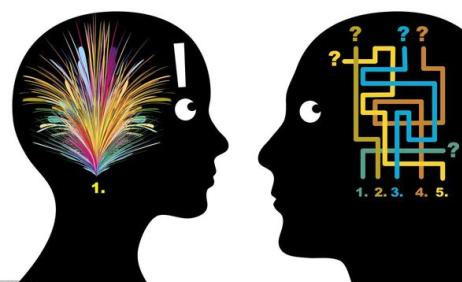
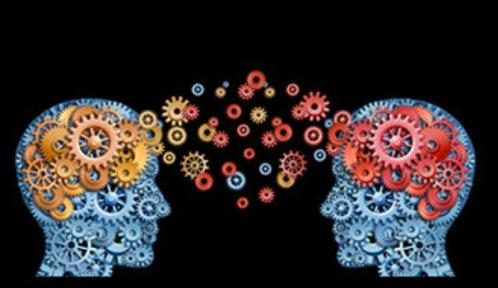

应用领域
心理学研究涉及知觉、认知、情绪、人格、行为、人际关系、社会关系等许多领域，也与日常生活的许多领域——家庭、教育、健康等发生关联。心理学一方面尝试用大脑运作来解释个人基本的行为与心理机能，同时，心理学也尝试解释个人心理机能在社会的社会行为与社会动力中的角色；同时它也与神经科学、医学、生物学等科学有关，因为这些科学所探讨的生理作用会影响个人的心智。 [1]
研究领域
发展心理学：研究人从胎儿出生到年老死亡的成长和发展的全过程。
学习心理学：探索人是如何发展成为如今的状态。研究人类和动物的学习发生过程和原因。
人格心理学：关注包括人格特征、动机和个体差异。
感觉与知觉心理学：研究人类怎样感知周围世界，如正在研究人类是如何识别面孔的。
比较心理学：研究和比较不同种系的动物行为。
生理心理学：研究行为与生理过程之间的关系，特别是神经系统的活动。
认知心理学：主要研究思维问题，试图了解推理、问题解决、记忆及其他心理过程与人类行为的关系。
性别心理学：研究男性与女性之间的差异，探索生理因素、儿童扶养过程、教育、社会刻版印象等各种因素对性别差异的影响。
社会心理学：研究涉及态度、说服、骚乱、顺从、领导行为、种族歧视、友谊、婚恋等问题。
文化心理学：研究文化对人类行为的作用。
进化心理学：研究人类在历史长河中各种进化方式对行为的影响。如男性与女性之间的配偶选择方式。
临床心理学：主要研究心理健康和心理疾病。
学前儿童心理学：学前儿童心理学是研究从出生到入学前的儿童心理发生发展规律的科学。
行为心理学：研究有机体用以适应环境变化的各种身体反应的组合
犯罪心理学：研究犯人的意志、思想、意图及反应的学科
 